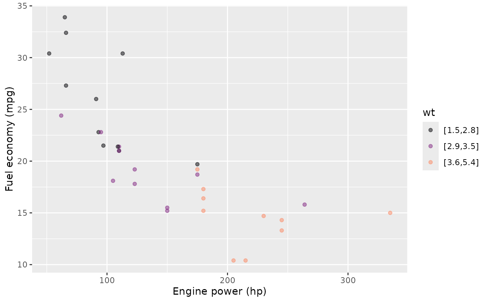

The {LST} package provides support for the style of R
computing used in the textbook, Lessons
in Statistical Thinking. This style seeks to reduce the
cognitive load on students by reducing to a minimum the number of R
functions and the syntax needed to undertake a complete course that
includes (simple) data wrangling, visualization, modeling, and causal
simulation. At the same time, the style supports using statistical
inference in an informal way from the very beginning of the course,
gradually formalizing it over the semester.
This document is oriented toward instructors or strongly motivated
students. The Lessons textbook and accompanying blog posts provide an
introduction for the typical student. The reader of this document should
already know at least a little about R: basics of data frames as well as
functions and function calls, named arguments, and R “formulas” (such as
mpg ~ hp + cyl) which are called tilde
expressions in Lessons. (Statistics students need to
use mathematical formulas from time to time, so best not confuse math
formulas with an unneeded name for an R syntactical structure.)
A command template
R commands in Lessons are well exemplified by the following: generating a plot of two variables in a data frame and then annotating the plot with a simple linear model.
mtcars |> point_plot(mpg ~ hp, annot = "model")
The command illustrates several features of the style of commands in Lessons:
-
The basic structure involves piping a data frame into a function. The pipeline structure is used almost exclusively in Lessons. For the reader not acquainted with the R pipe, the object on the left-hand side of the pipe token
|>becomes the first argument to the function call on the right-hand side.- The left-hand side of the pipe—the input end of the pipe–will very often be a data frame, but a handful of other types are used in that role in Lessons. (More on this later.)
- The right-hand side—the output end of the pipe–will always be a function call.
-
Variables in the data frame are referred to by unquoted name. Such variable names are only used in the role of an un-piped argument to the right-hand side function call.
- The
$notation is never used in any setting. - For situations in which there is a response variable (as in modeling or graphics), the variable names always appear in tilde expressions.
- The
Often, a tilde expression will be the only thing inside the parentheses that follow the function name. But sometimes additional details for the function will be added within the parentheses. In the above example command, the detail to add a statistical model as an annotation is specified by the argument `annot = “model”.
-
point_plot()is a omnibus graphics command sufficient for teaching an entire statistics course that includes inference and covariation.- The output is ggplot2 compatible.
- Other such omnibus commands from
{LST}seen in Lessons aremodel_train(),sample(), andtrials(). - Wrangling functions from dplyr are also occasionally
used, especially
mutate()andsummarize(). - Summaries of statistical models are made with the
{LST}functionconf_interval()and occasionallyR2(). (Near the end of the course,regression_summary()andanova_summary()are introduced, but these play only a very minor, optional role in the course.)
Pipe input-ends
I’m using the term input end of a pipe to refer to
the object on the left-hand side of the |> pipe token.
There are only a handful of types presented to the input end of the
pipe:
- A data frame is by far the most common input type.
- A statistical model is an input type used frequently in the second-half of the course.
- A “data simulation” is another kind of input type.
- Optionally, and mainly for enrichment, a data graphic frame (as
produced by
point_plot()) is used at the input of the pipe towards a command to add labels or to add another ggplot2 layer.
Pipe output-ends
Just as input end refers to the object provided at the left-hand side of the pipe, the object produced by the function call on the right side is the pipe’s output. Two essential points about pipe output-ends:
The R command given on the right-hand side of
|>will always be a function call. No exceptions. A function call consists of the name of a function (e.g.,point_plotormodel_train) followed by an open/closed pair of parentheses. Usually, there is something such as a tilde expression contained in the parentheses, but there are often additional named arguments such as theannot = "model"in the example command presented in @sec-command-template.The function call in (a) produces an R object. For the
{LST}functions, this object will always be one of the four types presented in the previous section (data frame, model, data simulation, graphics frame).
Multi-stage pipelines
The object produced by the function call at the output end of the
pipe |> can provide the input, via another
pipe, to another function call. This technique is often used for data
wrangling or when summarizing a model. For instance, the following
converts fuel “economy” (mpg) into fuel
consumption (liters per 100 km), which is then used as the
response variable in a model.
mtcars |>
dplyr::mutate(consumption = 235.2 / mpg) |>
model_train(consumption ~ hp + wt) |>
conf_interval()
#> # A tibble: 3 × 4
#> term .lwr .coef .upr
#> <chr> <dbl> <dbl> <dbl>
#> 1 (Intercept) -0.486 1.48 3.45
#> 2 hp 0.00647 0.0176 0.0287
#> 3 wt 1.92 2.70 3.48For convenience, the add_plot_labels() function will
modify the labels in a plot, taking as input a plot (as produced by
point_plot(), for instance) and returning as output the
modified plot. (Perhaps of interest to those familiar with
ggplot2 … add_plot_labels() is merely a
wrapper on ggplot2::labs() that avoids the non-standard
+ pipe system.)
mtcars |>
point_plot(mpg ~ hp * wt) |>
add_plot_labels(x = "Engine power (hp)", y = "Fuel economy (mpg)")
What to do with the ultimate output of a pipeline?
The flow of computation in a pipeline runs from left to right. The output object from the last stage of the pipeline will, by default, be printed. The alternative is to store that output object under a name, using the “storage arrow”, like this:
storage_name <- pipeline
In R, the form in which an object is printed is controlled by the programmer. Graphics are typically “printed” by displaying the graphic in an appropriate place. Data frames are typically printed as text.
In addition to data frames and graphics, Lessons deals frequently with two other sorts of objects: data simulations and models.
By default, models are printed as text. There is a wide variety of
formats corresponding to the large number of people who have communally
put together the modeling systems in R. Rather than the hodge-podge of
printed model formats, I encourage users to print specific summaries of
models such as graphs of the model function (use
model_plot()). The numerical model summaries in
{LST} are always printed in data-frame format. Most of the
time in Lessons, models are summarized with coefficients and
confidence intervals, a format produced by conf_interval().
I strongly recommend that model coefficients always be shown in
the context of a confidence interval; conf_interval()
imposes this policy. Another sometimes useful format of summary is
provided by R2(). Toward the end of the course, the ANOVA
generalization of R2 is introduced.
anova_summary() is useful for comparing two or more models.
regression_summary() shows a standard regression report,
but conf_interval() is, I think, a superior format. (If you
feel obliged to show a p-value, use the show_p = TRUE
argument to conf_interval(). But I recommend focussing on
whether the confidence interval includes zero, using the
level = argument if you aren’t happy with 0.05.)
Data simulations are printed as text showing the causal formulas relating one variable to the others. Like this:
sim_06
#> Simulation object
#> ------------
#> [1] a <- rnorm(n)
#> [2] b <- a + rnorm(n)
#> [3] c <- b + rnorm(n)
#> [4] d <- c + a + rnorm(n)Instructions for constructing data simulations are given in the
Simulating data with Directed Acyclic Graphs vignette of this
package. Many pre-built simulations are provided with this
{LST} package. New ones can be constructed using
datasim_make(). Except in the most straightforward cases,
such construction is an instructor-level task.
Trials and the pipe
A popular feature of the mosaic package is the
do() function, which provides syntax and logic for
repeating a command multiple times, accumulating the results into a data
frame. For instance:
{LST} has updated this functionality to take advantage
of the R built-in pipe notation and the style of arranging model
summaries as data frames. The functionality is provided by the
trials() function. To use it, place trials()
at the end of a pipeline:
mtcars |>
take_sample(replace = TRUE) |> # resampling here!
model_train(mpg ~ hp) |>
conf_interval() |>
filter(term == "hp") |>
trials(5)
#> .trial term .lwr .coef .upr
#> 1 1 hp -0.05884886 -0.04350439 -0.02815991
#> 2 2 hp -0.07123911 -0.05567061 -0.04010210
#> 3 3 hp -0.10945900 -0.08387168 -0.05828437
#> 4 4 hp -0.11131359 -0.08981114 -0.06830869
#> 5 5 hp -0.08612844 -0.06705820 -0.04798795You can, of course, take the data frame produced by
trials() to use for later wrangling or graphics.
It’s natural to think of the pipeline leading up to the
trials() stage as creating a single output. But
trials() has a seemingly magical ability to grab the whole
pipeline and run it over and over again. (The “magic” is provided by the
“non-standard evaluation” facilities in R, an advanced programming
construct.)
An excellent way to develop the statement to be repeated: write the
pipeline excluding the final trials() stage. Each
time you run the truncated pipeline, you will receive one object. When
this object has the format you seek, add the final trials()
stage back in.
Graphics in {LST}
Instructors may feel obliged by convention to introduce the menagerie
of plotting modalities, such as bar charts, line charts, histograms,
etc. Lessons was written to use only a single primary graphic
modality: the point plot (a.k.a. “scatter plot”) as produced by
point_plot(). Three other modalities—confidence intervals,
confidence bands, and violin plots of density—are provided by the
annotation feature of point_plot(). These are
annot = "violin" and "annot = "model".
The output of point_plot() is a ggplot2
graphical object. Consequently, you can use the various
ggplot2 functions to set a graphics theme, label axes,
and so on. Unfortunately, ggplot2 functions use the
+ pipe rather than |>. This can be
confusing and frustrating for students.
I recommend use of the ggformula package which
re-packages the ggplot2 facilities in a way that can be
used with the R pipe |> and which employe
tilde-expressions for specifying response and explanatory variables.
{LST}, {mosaic}, and
{ggformula}
The MOSAIC suite of packages—including mosaic and
ggformula—are widely used in teaching statistics with R.
Many of the pedagogical principles behind {LST} are shared
with mosaic and ggformula. You are of
course welcome to use mosaic and ggformula
along with {LST}, particularly if you want to teach other
graphics modalities than those provided by
LST::point_plot().
Other than shared pedagogical principles, there is no connection of
{LST} with either mosaic and
ggformula. One reason for this is the pipe
|>, which prominently features in Lessons.
mosaic is not pipe-ready because many functions require a
data = argument.
Another reason concerns recent developments in deploying R computing
via web pages. The system that provides within-a-web-page R
computing is not yet compatible with mosaic or
ggformula. For {LST} to work with R embedded
in web pages, {LST} cannot make any use of
mosaic/ggformula. This situation may
change in the future, at which point {LST} will be able to
acknowledge its aunts and uncles.